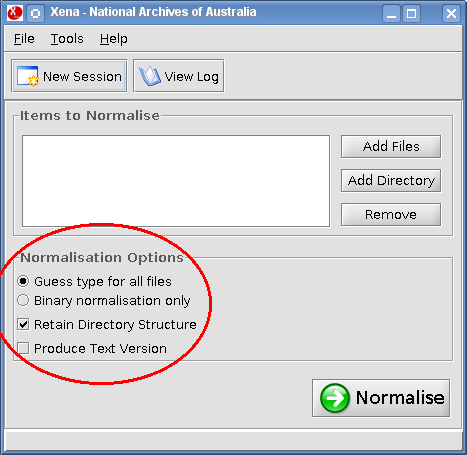

You can select from several normalisation options prior to normalising any files. These options are available via the main Xena window:

This is selected by default. Xena determines the file type of each file to be normalised and applies the normaliser best suited to that file type. Once converted to an open format, the files are then encoded as text (Base64 encoded) with an XML metadata header and footer.
This option skips the conversion step above, retaining the original file in its original format. Xena will still encode the file in Base64 text with an XML metadata header and footer.
This is selected by default. Any files normalised with this option can be exported with the directory structure they had prior to being normalised. This is a useful feature if you are normalising several files with a complex directory structure. For more information about exporting, see Exporting Xena Files.
Xena will create a human readable text version of the normalised file in the text-version sub-directory of the Xena destination directory (see Setting Preferences).
Xena will only produce text versions of certain file types, where they actually include text (a photograph of the beach will not work). Supported file types include: